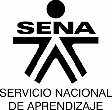

El Colegio José Antonio Galán fue creado el 24 de Noviembre de 1967, con el objetivo de impartir conocimiento a toda la comunidad educativa, ademas, con el proposito de crear lideres que proyecten un mejor futuro para el pais.
El colegio tiene un himno que lo representa
Pero antes de ese, tenia una cancion llanera que usaban para representarlo
¿Quien es Jose Antonio Galan?
Galán es una figura reconocida en la historia colombiana debido a la manera cómo fue ejecutado por las autoridades españolas. Su memoria se ha perpetuado como símbolo de la lucha de los grupos sociales más fuertes de la sociedad neogranadina y gran defensor de las etnias.
Con el eslogan «¡Unión de los oprimidos contra los opresores!», Galán lideró una campaña por el Río Magdalena donde declaró libre de tributo a los pueblos indígenas declarando además la libertad a los esclavos negros.
VISION DEL COLEGIO
Seremos una de las mejores Institucion es Educativas del departamento del Meta, reconocida por su liderazgo en la prestacion del servicio eductivo, en acciones pedagogicas e inclusivas orientadas la formacion integral de los estudiantes; de manera que trascienda en el avance del conocimiento, la cultura, el deporte, la tecnologia, la investigacion y la proteccion del medio ambiente, con el impacto en el progreso social, local, regional y nacional.
MISION DEL COLEGIO
La institucion educativa JOSE ANTONIO GALAN de Cumaral Meta garantiza el ingresa y la permanencia con equidad al sistema educativo. Forma lideres capaces de resolver con sentido critico los problemas y retos que la vida le plantea, a partir de la adquisicion de saberes valore, el desarrollo de habilidades y la interaccion con su entorno social; desde la implementacion de proyectos pedagogicos que favorecen el cuidado del medio ambiente, el apoyo de talentos, la sana convivencia, entre otros, y la transversalizacion con las diferentes areas del conocimiento.
VALORES DEL COLEGIO
Responsabilidad
Respeto
Honestidad
Tolerancia
Equidad
Alteridad
MODELO PEDAGOGICO
Nuestra Institucion forma integralmente al niño y la niña inculcandoles valores morales y eticos. Es consecuentemente humanista, centrada en el ser como tal en via de desarrollo. la actividad pedagogica tiene como estrategia la metodologia activa, utilizando el modelo pedagogico critico social, proporcionando un ambiente de trabajo y disciplina. En este modelo los alumnos desarrolaran su personalidad y sus capacidades cognitivas en torno a las relaciones sociales para una colectividad en consideracion del hacer cientifico.
Organizacion
En el colegio hay un sistema de organizacion, empezando por el rector que es el mayor jefe que hay, el tiene unas secretarias que le ayudan a organizar y manejar los documentos de todos los docentes y estudiantes, luego va el coordinador de cada jornada, ellos se encargan de mantener el rendimiento academico y disciplinario en su respectiva jornada, ahora van los profesores, ellos son los encargados de dirigir y dictar las clases que se les brindara a los estudiantes, por ultimo, los estudiantes, ellos son los que reciben las clases y vienen al colegio con el proposito de plantearse un mejor futuro
SENA

El Servicio Nacional de Aprendizaje, SENA, nace en 1957, mediante el Decreto-Ley 118 del 21 de junio de 1957, como resultado de la iniciativa conjunta de los trabajadores organizados, los empresarios, la iglesia católica y la Organización Internacional del Trabajo.
VISION DEL SENA
El SENA será una organización de conocimiento para todos los colombianos, innovando permanentemente en sus estrategias y metodologías de aprendizaje, en total acuerdo con las tendencias y cambios tecnológicos y las necesidades del sector empresarial y de los trabajadores, impactando positivamente la productividad, la competitividad, la equidad y el desarrollo del país.
MISION DEL SENA
El Servicio Nacional de Aprendizaje (SENA) se encarga de cumplir la función que le corresponde al Estado de invertir en el desarrollo social y técnico de los trabajadores colombianos, ofreciendo y ejecutando la Formación Profesional Integral gratuita, para la incorporación y el desarrollo de las personas en actividades productivas que contribuyan al desarrollo social, económico y tecnológico del país.
Himno
Coro
Estudiantes del SENA, adelante!por Colombia luchad con amor con el ánimo noble y radiante transformémosla en mundo mejor. (BIS)
..
I
De la patria el futuro destino en las manos del joven está.El trabajo es seguro caminoque el progreso a Colombia dará.
..
II
En la forja del SENA se forman hombres libres que anhelan triunfar.Con la ciencia y la técnica unidas nuevos rumbos de paz trazarán.
..
Coro
Estudiantes del SENA, adelante! por Colombia luchad con amor con el ánimo noble y radiante transformémosla en mundo mejor. (BIS)
..
III
Hoy la patria nos grita sentida estudiantes del SENA, triunfad,sólo así lograreis en la vida más justicia, mayor libertad.
..
IV
Avancemos con fuerza guerrera estudiantes con firme tesón que la patria en nosotros espera su pacífica revolución.